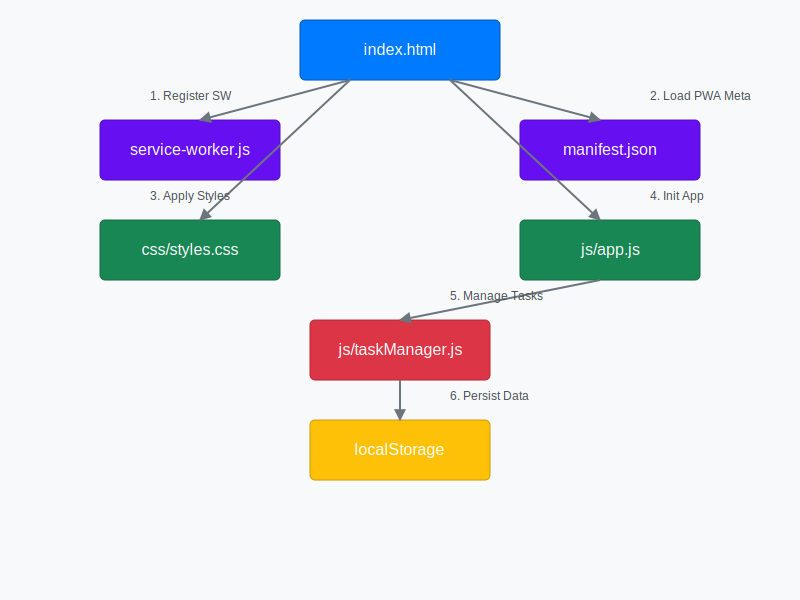

Application Workflow Diagram
The following diagram illustrates the interaction between different components of the tasks-v1 PWA:

tasks-v1 is designed as a lightweight, offline-first task management application. It utilizes modern web technologies like HTML5, CSS3, JavaScript (ES6+), and Bootstrap 5 to provide a seamless user experience. All data is stored locally in your browser, ensuring privacy and accessibility even without an internet connection, thanks to its Progressive Web App (PWA) features including a Service Worker and a Web App Manifest.
This project serves as a demonstration of PWA capabilities, focusing on client-side operations, local storage, and a responsive user interface built with Bootstrap components.
Explore the inner workings of the application through the following resources:
The following diagram illustrates the interaction between different components of the tasks-v1 PWA:
For a detailed explanation of the project structure, setup, and features, please refer to the README content below:
Loading README.md...